×
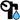 flyweel - drinking water yes
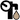 flyweel drinking water no
flyweel - no water
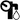 flyweel - unknow status
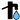 lever pump - drinking water yes
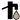 lever pump - drinking water no
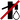 lever pump - no water

lever pump - unknow status
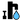 pedal - drinking water yes
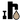 pedal - drinking water no
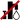 pedal - no water
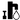 pedal - unknow status
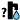 unknown pump - drinking water yes
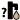 unknown pump - drinking water no
unknown pump - no water
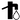 unknown pump - unknow status
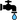 water tap - drinking water yes
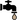 water tap - drinking water no
water tap - no water
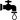 water tap - unknow status
unknown water well - drinking water yes
unknown water well - drinking water no
unknown water well - unknow status
water well - drinking water yes
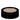 water well - drinking water no
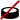 water well - no water
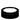 water well - unknow status